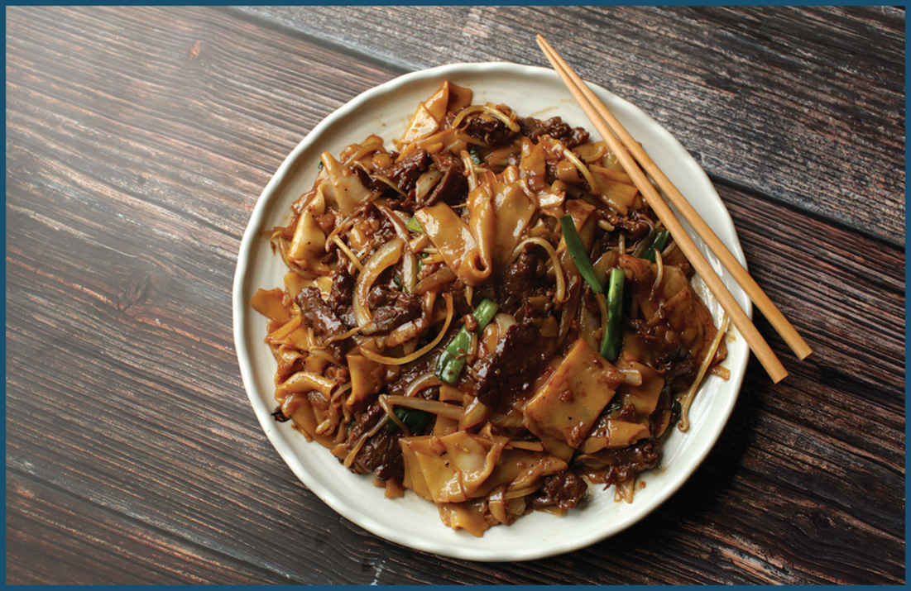
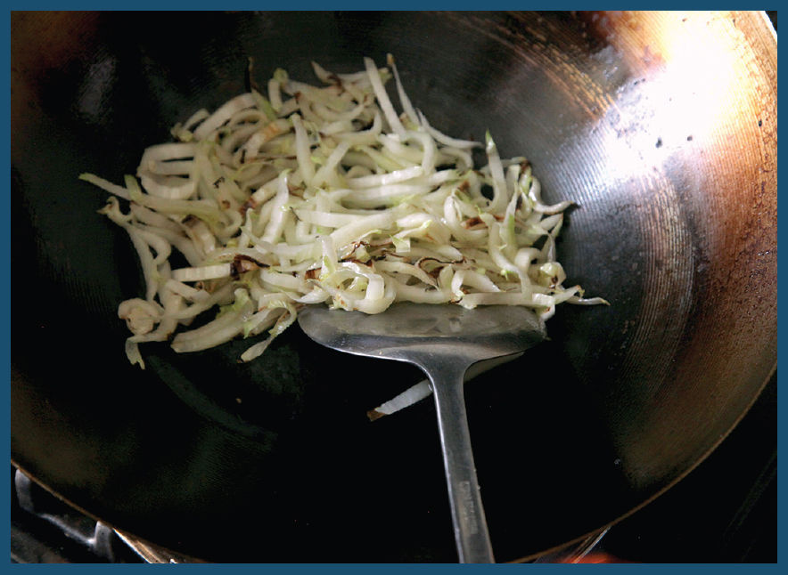
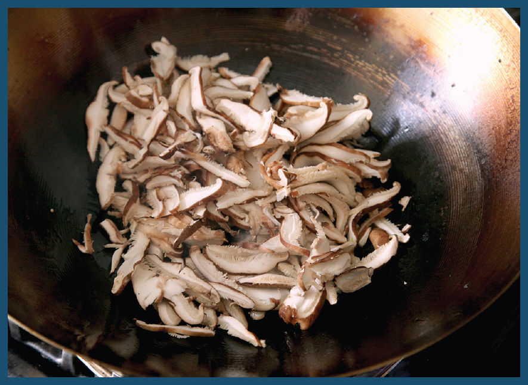
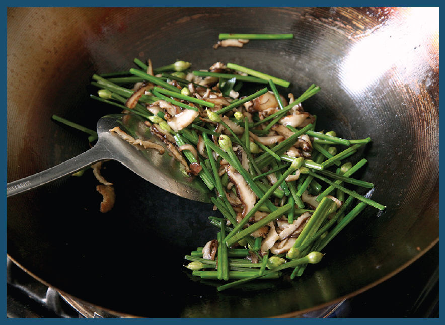
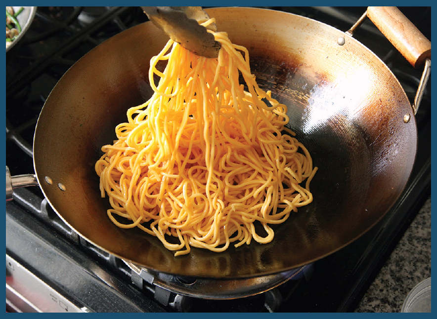
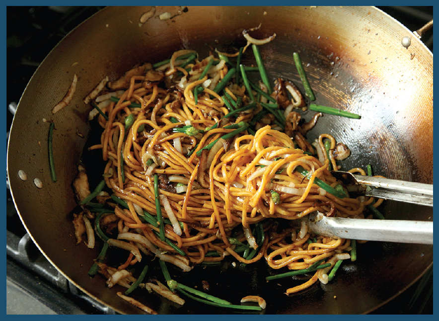
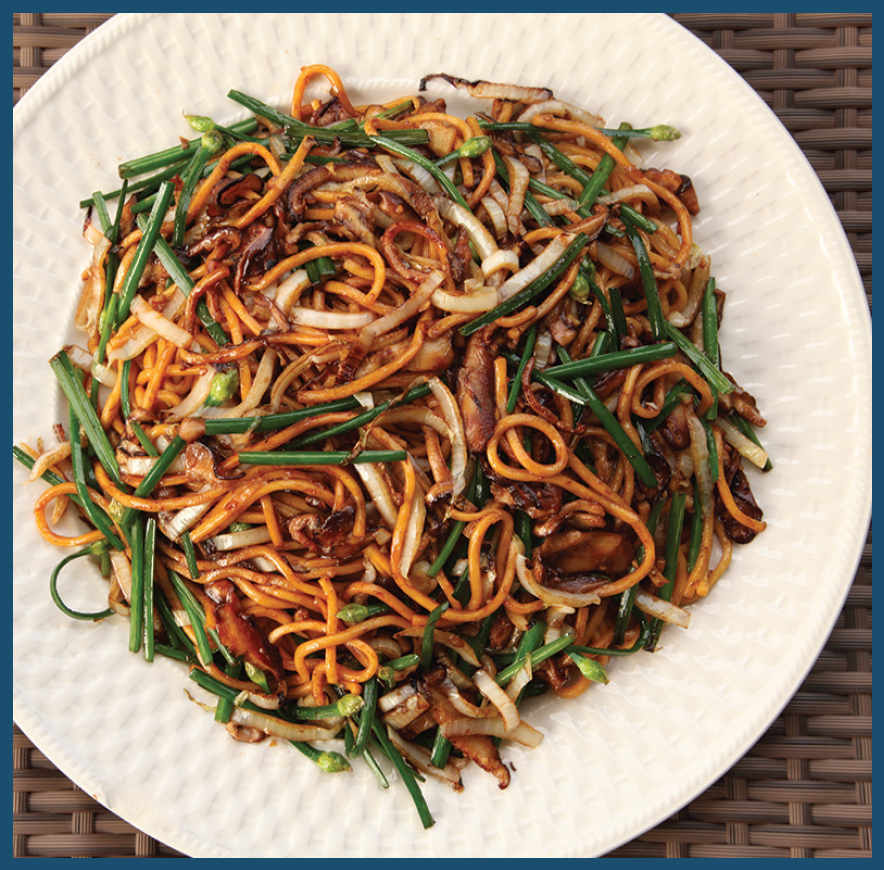

As with standard stir-fries, the most important part of stir-frying noodles is managing heat, making sure that ingredients are cooked rapidly and successively, and keeping the wok uncrowded so that ingredients sear and remain vibrant and fresh rather than steamed and drab. The major difference between stir-frying noodles and other stir-fries is the tendency of noodles to break if stirred too aggressively with a metal wok spatula or tongs. With especially delicate noodles like hor fun, many professional chefs will completely avoid using any utensils after the noodles are added, instead relying only on their ability to rapidly and effectively flip and toss the contents of the wok to combine the ingredients.
You don’t have to do that. It’s OK to use your spatula or tongs so long as you are gentle with them. Sure, you may break a few noodles along the way, but I promise you, they’re still going to taste delicious.
How to Stir-Fry Lo Mein
Lo mein translates directly as “stirred noodles,” and in Guangdong the dish typically consists of thin egg noodles—about as thin as wonton noodles or slightly thicker—that are boiled and then served topped with a sauce and toppings that can be as simple as a drizzle of oyster sauce or soy sauce with some blanched green vegetables and a fragrant oil (or lard) or more complex with braised meats, seafood, or expensive XO sauce.
In the West, lo mein are thick, yellow egg and wheat noodles that hold up well to stir-fries, retaining a nice hearty chew even after they’ve been coated in sauce and have sat around for a while. This is good news, because it means you can stir-fry a big batch and save the leftovers to eat later on in the week without a big dip in quality.
Here are the basic steps for stir-frying Chinese American–style lo mein.
Step 1 • Par-Boil the Noodles
The first step in any egg noodle stir-fry is to par-cook the noodles in boiling water. Some recipes suggest boiling the noodles until fully cooked, then shocking them under cold running water. This works just fine, but I prefer to take the easier route: I blanch them just until tender (about a minute), then transfer them to a bowl and toss them with a little oil to keep the noodles separated. The residual heat from the water will keep cooking them until they’re ready to stir-fry a few minutes later. This also ensures that the noodles aren’t too wet before being added to the wok.
Be careful: some brands sell their noodles preboiled, in which case all they need is a quick 10- to 15-second dunk in boiling water to soften them up and make them pliable before stir-frying.
Step 2 • Cook the Non-Noodle Ingredients in Batches

If you’ve got a powerful outdoor wok burner, you can do as they do at restaurants and add ingredients successively to the wok and build your dish that way, but on a regular home burner it means cooking in batches. For this simple stir-fry with shiitake mushrooms, cabbage, and chives, for instance, I start by cooking the shredded cabbage on its own until it chars and gets that awesomely sweet, nutty flavor that will weave its way through the whole stir-fry.

After the cabbage is done, I empty the wok, reheat it with some more oil (making sure to get it smoking hot!), and add thinly sliced shiitake mushrooms, which I had prepped and ready in a bowl conveniently placed next to my cooking station. Mushrooms contain a ton of water and empty space in their spongy flesh, so you’ve got to cook them long enough to let that flesh break down, concentrating their flavor. They’re ready when they’ve stopped steaming and exuding moisture and instead are sizzling and browning.

Once the mushrooms are ready, I add a handful of chives or scallions (again, lovingly precut and cradled in their own conveniently placed bowl), stir-frying them just long enough to tame their raw bite, but leaving them nice and crisp. The shrooms and chives join the cabbage in the bowl on the side.
Step 3 • Stir-Fry the Noodles

Once all of the additional ingredients are cooked, I stir-fry the noodles (after preheating and oiling the wok again, of course). By the time you add the noodles to the wok, their surfaces should have dried out, making it easy to toss and separate them in the wok. This is the stage where you should try to be gentle with your spatula. Rather than stirring and tossing, you can gently scoop from underneath and turn the noodles over, or you can plant the head of the spatula on the near side of the base of the wok, with the concave side pointing back toward you, using the back of the spatula to move things around as you shake and toss. If you prefer to use tongs, reach for the nylon-tipped pair instead of the all-metal ones to avoid cutting the noodles up unnecessarily.
Step 4 • (Optional): Add Wok Hei
If you want to add a bit of smoky wok hei flavor to your stir-fried noodles, now’s the time to pull out your blowtorch. You can do this directly in the wok as you stir-fry, or, if you prefer, on rimmed baking sheets outside of the wok where you can take a little more time. Just spread the cooked noodles and toppings out on a rimmed baking sheet, set the baking sheet on a heatproof surface (like your burner grates), then pass a blowtorch over them, holding the flame 2 to 3 inches above the tray and sweeping across with the torch until you smell a distinctly smoky aroma. If you’re at the right distance, you should hear a little crackle as small bursts of orange flame leap off the noodles and vegetables. This is the noise and sight of oil droplets vaporizing and combusting. (For more on wok hei, see here.)
Step 5 • Add Your Aromatics, Return Everything to the Wok, and Sauce It up

When I’m ready to serve the noodles, I reheat the wok, briefly stir-fry some aromatics (say, garlic, scallions, and ginger) in oil, then return everything to the wok and add my sauce. Noodles at take-out restaurants are often swimming in gloppy sauce. I like my noodles very moderately sauced—just enough to lightly coat each strand, but not so much that it pools at the bottom of the bowl.
